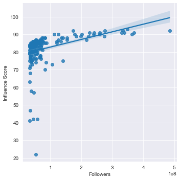
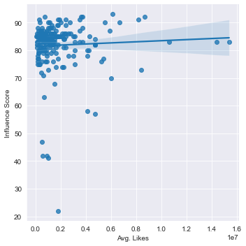
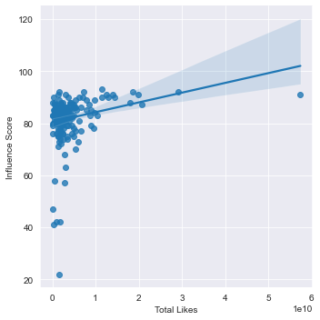
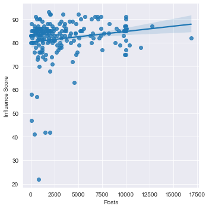

In recent years, being a social media influencer has become a more popular "job" choice. Whether it be through Instagram, Tiktok or some other platform, people want to know what makes an influencer more popular. Well, I have found data about Instagram Influencers on Kaggle and I have done an analysis in order to answer that question. I have seperated the previous question into four seperate questions in order to better determine what affects an influencers popularity. These four questions determine if there is a statistically significant correlation between an influencers score and their amount of followers, their average likes, their total likes or their amount of posts. I would like to make it clear before you go on that there is always room for error and that my findings may be inaccurate due to them being collected by someone else, only taking into account one variable at a time, not knowing how the data was collected and because the data is not new.
After removing all columns of data except Influencer Score and Followers, I began to use pandas to gather the statistical data such as the median, mode, maximum value, minimum value and correlation. The correlation is to see if there is a statistically significant relationship between the two data points. I found that the correlation was 0.365428, which is very weak and tells me that the Followers do not have a direct affect on an Influencer score. I then used seaborn to create a regression plot to visualize and confirm my findings.
After removing all columns of data except Influencer Score and Average Amount of Likes, I began to use pandas to gather the statistical data such as the median, mode, maximum value, minimum value and correlation. The correlation is to see if there is a statistically significant relationship between the two data points. I found that the correlation was 0.048502, which is very weak and tells me that the Average Amount of Likes do not have a direct affect on an Influencer score. I then used seaborn to create a regression plot to visualize and confirm my findings.
After removing all columns of data except Influencer Score and Total Likes, I began to use pandas to gather the statistical data such as the median, mode, maximum value, minimum value and correlation. The correlation is to see if there is a statistically significant relationship between the two data points. I found that the correlation was 0.234987, which is very weak and tells me that the Total Likes do not have a direct affect on an Influencer score. I then used seaborn to create a regression plot to visualize and confirm my findings.
After removing all columns of data except Influencer Score and Amount of Posts, I began to use pandas to gather the statistical data such as the median, mode, maximum value, minimum value and correlation. The correlation is to see if there is a statistically significant relationship between the two data points. I found that the correlation was 0.168287 which is very weak and tells me that the Amount of Posts do not have a direct affect on an Influencer score. I then used seaborn to create a regression plot to visualize and confirm my findings.
